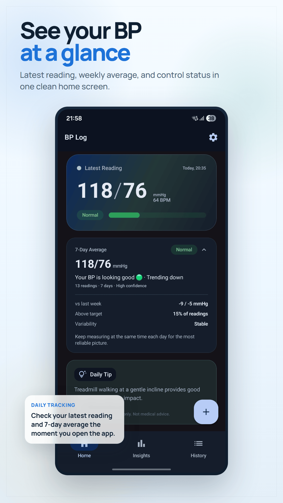
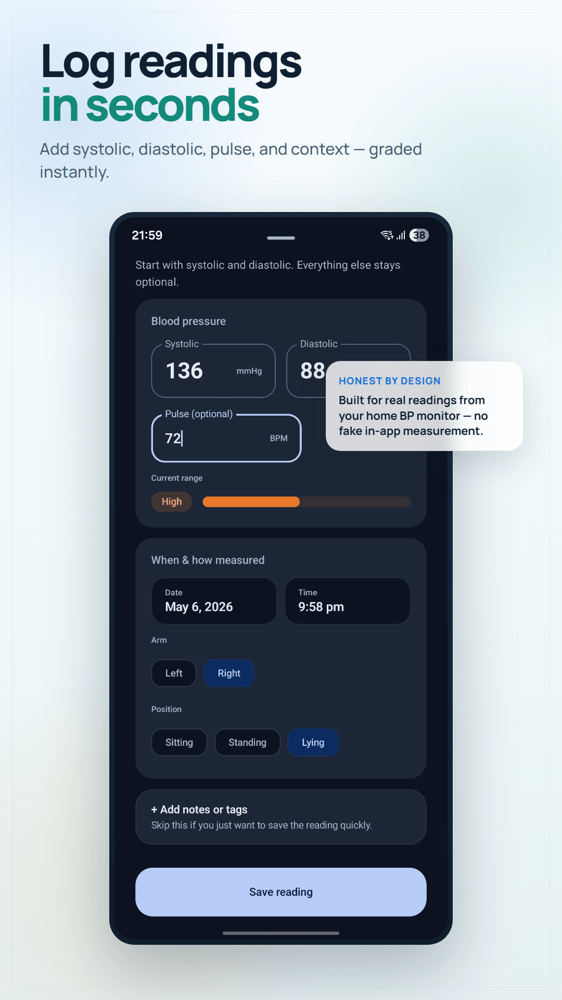
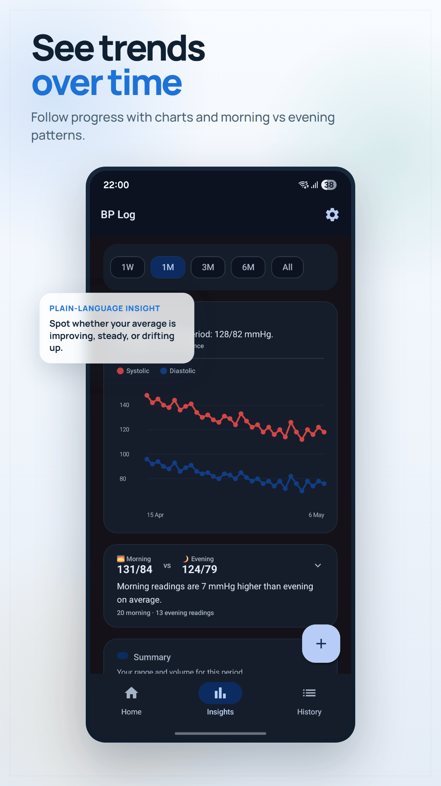
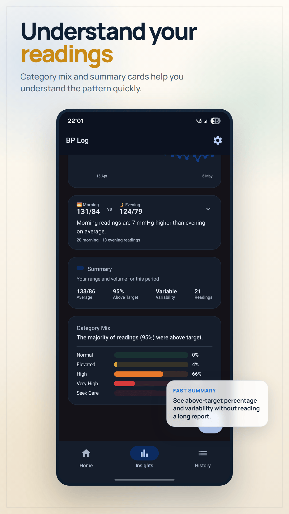
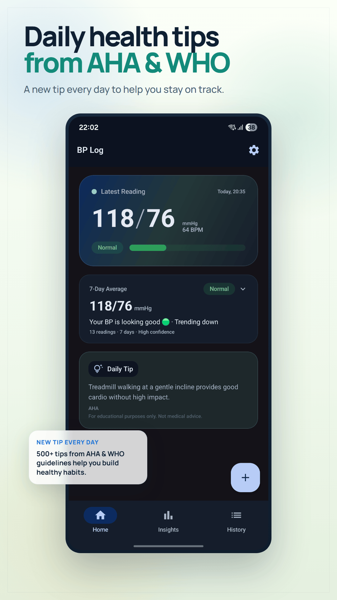
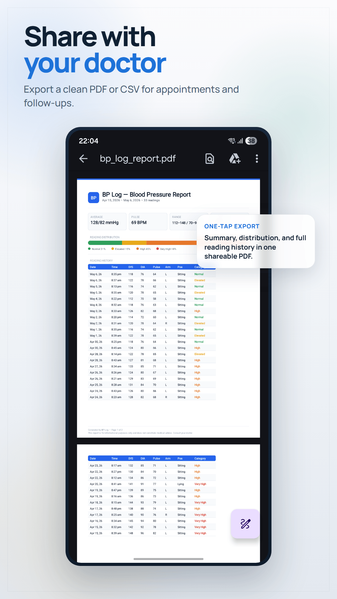
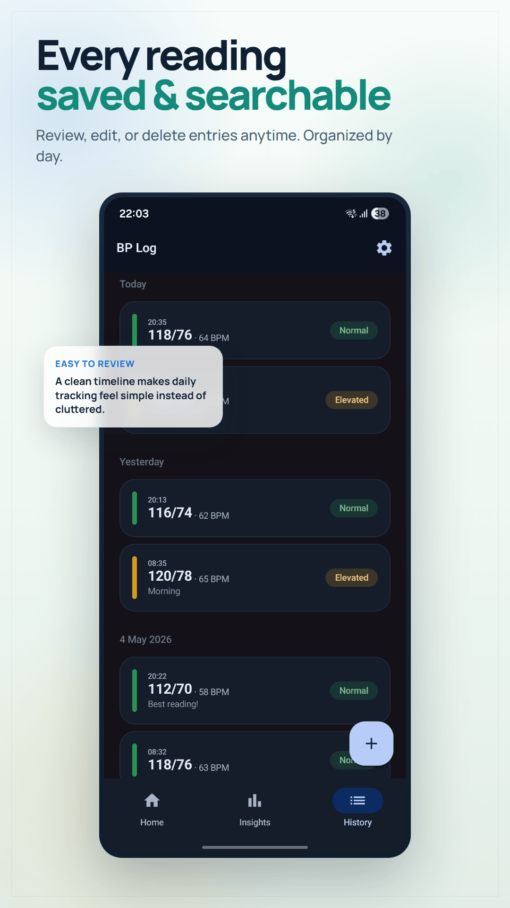
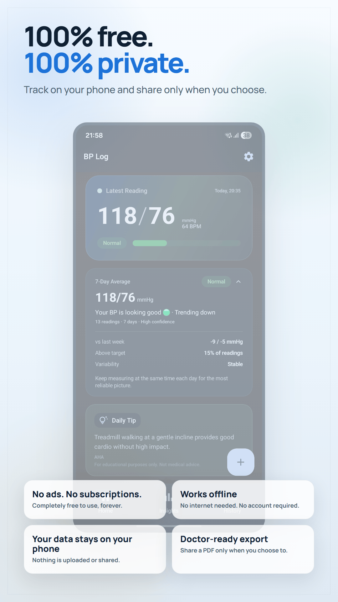

BP Log — Blood Pressure Tracker
BP Log — Blood Pressure Tracker
Log readings from your home BP monitor. See trends, track your progress, and share reports with your doctor — all for free.
Screenshots








❤️🩹 Want to understand a reading? Try our free Blood Pressure Category Checker.
Features
Log in Seconds
Enter systolic, diastolic, and pulse — done. No 30-question onboarding.
AHA Color Coding
Every reading auto-classified as Normal, Elevated, Stage 1, Stage 2, or Crisis using American Heart Association guidelines.
Trend Charts
See your systolic and diastolic trends over time. Track by week, month, 3 months, 6 months, or all time.
Distribution Analysis
What percentage of readings are Normal vs Stage 1? See the full picture in one chart.
PDF Reports
Generate a clean PDF of your readings. Share directly with your doctor at your next visit.
Reminders
Set morning and evening reminders so you never miss a reading. The AHA recommends measuring at the same time daily.
Daily Health Tips
Expert-backed tips to help manage your blood pressure naturally, from diet to exercise to stress management.
100% Offline
Your data stays on your phone. No account needed. No internet required. Your health data is yours alone.
Blood Pressure Categories (AHA 2017)
| Category | Systolic | Diastolic |
|---|---|---|
| Normal | Below 120 | Below 80 |
| Elevated | 120–129 | Below 80 |
| Stage 1 Hypertension | 130–139 | 80–89 |
| Stage 2 Hypertension | 140+ | 90+ |
| Hypertensive Crisis | Above 180 | Above 120 |
Start Tracking Your Blood Pressure Today
Free forever. No ads. No subscriptions. Just a simple tool that works.
▶ Download BP LogFrequently Asked Questions
Is BP Log really free?
Yes. BP Log is 100% free with no ads, no subscriptions, and no in-app purchases. It will always remain free.
Does BP Log need internet access?
No. BP Log works completely offline. Your blood pressure data is stored only on your device and never uploaded to any server.
What is AHA blood pressure classification?
The American Heart Association (AHA) classifies blood pressure into categories: Normal (less than 120/80), Elevated (120-129/less than 80), High Blood Pressure Stage 1 (130-139/80-89), High Blood Pressure Stage 2 (140+/90+), and Hypertensive Crisis (180+/120+). BP Log automatically classifies each reading.
Can I share my BP readings with my doctor?
Yes. BP Log lets you export your readings as a PDF report that you can share with your doctor via WhatsApp, email, or print.
How often should I measure blood pressure at home?
The AHA recommends measuring blood pressure twice daily — once in the morning before taking medications, and once in the evening. Take 2-3 readings each time, 1 minute apart, and record the average.
Is my health data private?
Absolutely. BP Log stores all data locally on your device only. There is no account, no cloud sync, and no data collection. Your health information never leaves your phone.
Can BP Log replace my doctor's advice?
No. BP Log is an informational tool for tracking readings. The AHA classification is for reference only and is not a medical diagnosis. Always consult your doctor for medical decisions.
Related Articles
-
How to Track Blood Pressure at Home: A Complete Guide
Learn why home BP monitoring matters, how to take accurate readings, and what your numbers mean.
-
Normal Blood Pressure by Age: Chart and What Your Numbers Mean
See the blood pressure chart by age for adults and understand AHA categories.
-
10 Natural Ways to Lower Blood Pressure (Backed by Research)
Evidence-based lifestyle changes that can lower your blood pressure by 10–20 mmHg.
From the blog
How to Track Blood Pressure at Home
A complete guide to accurate home BP monitoring.
Normal Blood Pressure by Age
The chart by age and what your numbers mean.
10 Natural Ways to Lower Blood Pressure
Evidence-based lifestyle changes backed by research.